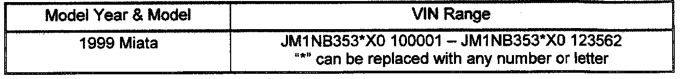
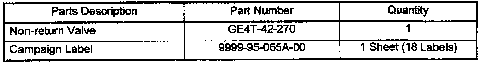
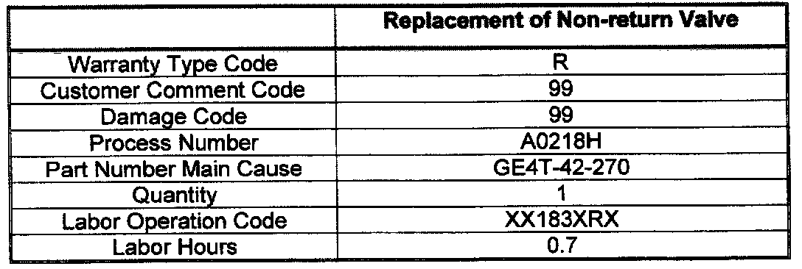

Attachment I
CONDITION OF CONCERNIt has been determined that fuel may overflow and/or spit back when refueling. This condition may be due to a sticking non-return valve in the fuel filler pipe that causes the gas pump nozzle to repeatedly shut off. These vehicles must have a modified non-return valve installed to prevent this from occurring.

SUBJECT VEHICLES
OWNER NOTIFICATION
Mazda will renotify owners of subject vehicles by mail on November 19, 2001.

REQUIRED PARTS
Campaign labels are supplied at no charge and are available in 8-1/2" X 11" sheets containing 18 labels. Please use MNET to order the labels.

WARRANTY INFORMATION
REPAIR PROCEDURE
Refer to attachment II.